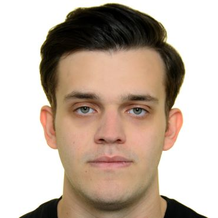

Paschalis Giakoumoglou
PhD student at University College London
I am a PhD student in the Department of Computer Science at University College London (UCL), based in the UCL Centre for Artificial Intelligence and supervised by Prof. Vasileios Lampos, and a member of the Ωmega Research Group. My research focuses on foundation models for time series, with broader interests in representation learning and multimodal learning.
Previously, I was a Research Assistant at the Information Technologies Institute of the Centre for Research and Technology Hellas (ITI-CERTH), where I worked on representation learning, multimedia forensics, generative image assessment, and trustworthy AI. I received my Integrated MSc in Electrical and Computer Engineering from Aristotle University of Thessaloniki in 2024.
News
-
Started my PhD in Computer Science at UCL, supported by a UCL Computer Science Studentship.
-
Our paper Harmful Content Generation in Text-to-Image Models: Capabilities and Moderation Limitations was accepted for publication in ACM TIST.
-
Our paper What Makes Synthetic Hard Negatives Work in Vision-Language Pretraining? was accepted at ACCV 2026.
-
Our paper Three Necessary Principles for Self-Supervised Visual Representation Learning was accepted at the ECCV 2026 UniWorld Workshop.
-
DiffusionPrint appeared at the CVPR 2026 AIMS Workshop.
-
TGIF2: Extended Text-Guided Inpainting Forgery Dataset & Benchmark was published in the Journal on Information Security.
-
Our paper SAGI was accepted at ICCV 2025.
Research
View publications →Current focus
Foundation models for time series, representation learning, and multimodal learning.
Previous work
Multimedia forensics, generative image assessment, image forgery localization, and generative AI safety.